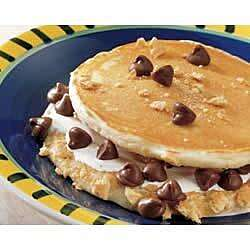

Pancake

Description
An easy and quick pancake recipe for pancake smores, this recipe can be ready in only 15 minutes, and can serve up to 7.
Ingredients
- 2 cups Original Bisquick® mix
- 1 ⅓ cups milk
- 2 tablespoons white sugar
- 1 teaspoon vanilla
- 1 egg
- ⅓ cup graham cracker crumbs
- 7 tablespoons marshmallow creme
- 7 tablespoons milk chocolate chips
Steps
- Heat griddle or skillet; grease if necessary. Stir Bisquick mix, milk, sugar, vanilla and egg until blended. Pour batter by slightly less than 1/4 cupfuls onto hot griddle
- Cook until bubbles break on surface. Sprinkle about 1 teaspoon cracker crumbs over each pancake. Turn; cook until golden. Remove from griddle.
- Spread about 1 tablespoon marshmallow creme over the crumbs side of each of 7 pancakes; sprinkle about 1 tablespoon chocolate chips over marshmallow creme on each. Top with another pancake, crumbs side down.